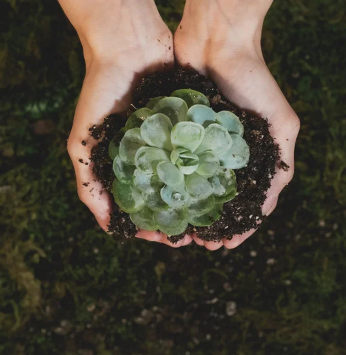
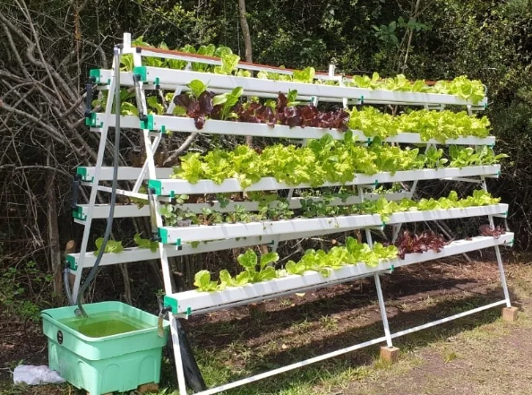

En EcoGrown, ofrecemos kits de cultivo hidropónico fáciles de usar, accesibles y sostenibles, empoderando a las personas para cultivar sus propios alimentos de manera ecológica.

Nuestros Productos
Kit Básico EcoGrown: Perfecto para principiantes, incluye semillas, sistema sencillo, nutrientes y guía práctica.
Kit Avanzado EcoGrown: Para los expertos en hidroponía, con sistemas más completos y semillas de alto rendimiento.
Kit Vertical EcoGrown: Optimiza espacios reducidos con este kit diseñado para áreas urbanas.
Kit Educativo EcoGrown: Ideal para instituciones educativas, incluye materiales didácticos para aprender hidroponía.

Beneficios
Ahorro de agua hasta un 90% en comparación con la agricultura tradicional.
Producción de alimentos frescos, libres de pesticidas.